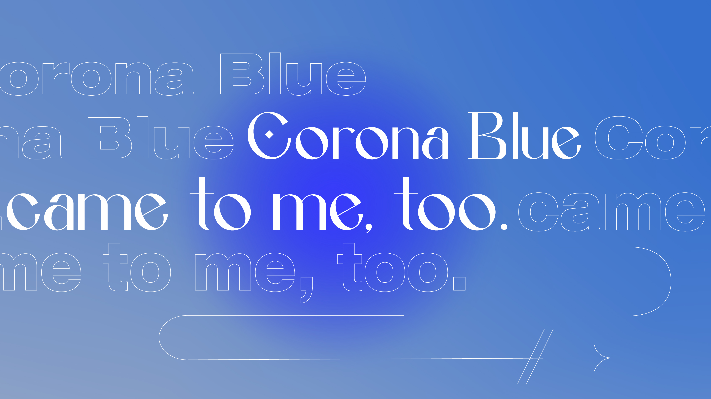
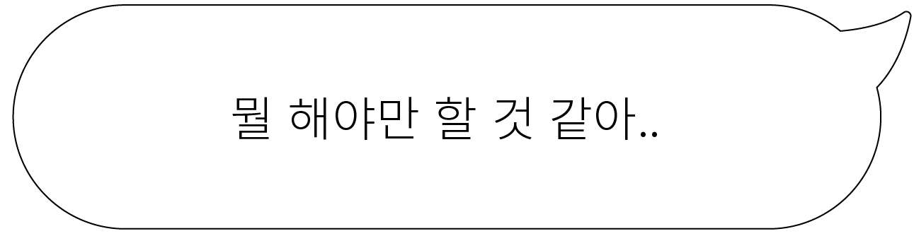
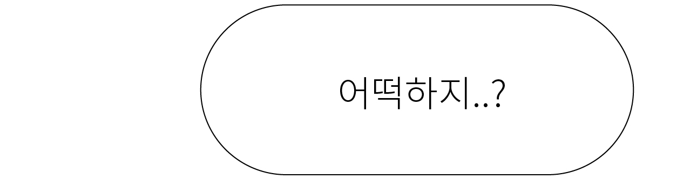
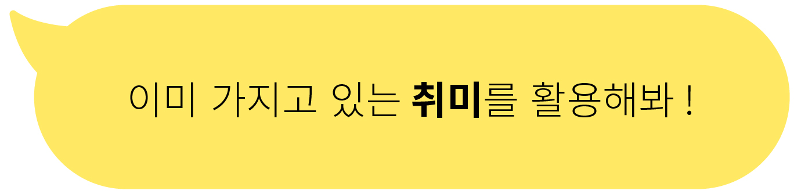

<!DOCTYPE html>
<html>
<head>
	<meta charset="utf-8">
	<title>팬데믹 속에서 지치지 않으려면 어떻게 해야할까</title>
	<link href="https://fonts.googleapis.com/css2?family=Noto+Sans+KR:wght@100;300;400;500;700;900&display=swap" rel="stylesheet">
	<style type="text/css">
		body,h1,h2,h3,h4,h5,{margin:0;}
		header{display: flex;}
		h1 {font-size: 7rem;text-align: center;background: url(https://img.freepik.com/free-photo/rich-blue-colors-in-gradient_23-2147734169.jpg?size=626&ext=jpg);
			-webkit-background-clip:text;
			background-clip: text;
			-webkit-text-fill-color: transparent;
			animation: animate 0.5s linear infinite;}
			@keyframes animate{ from {background-position: 0% 50%;} to{background-position: 100% 50% 0%;}}
		h2 {font-size: 2.5em; text-align: center;}
		h3 {text-align: center;}
		.p1{background: url('도형.jpg');background-size: 100% auto;background-repeat:no-repeat; height: 1200px;width: 100%;font-size: 1.2rem;display: block;}
		.R {background: url('reading1.jpg');background-size: 100% auto;background-repeat:no-repeat; height: 500px;width: 100%;}
		.m{font-size:1.5rem;text-align: center;}
		@keyframes textshow{from {opacity: 0; transform: translateY(0)}to{opacity:1;transform: translateY(86px);}}
		.circle{animation: textshow 2s infinite;}
		.circle2{animation: textshow 2.7s infinite;}
		.Q {background: url('누은사람.jpg');background-size: 100% auto;background-repeat:no-repeat; height: 700px;width: 100%;display: block;}
	</style>
</head>
<body>
	<header>
		 
	</header>
	<h1> CORONA BLUE </h1>
	<h2> 팬데믹 속에서 지치지 않으려면 어떻게 해야할까?</h2>
	<section>
		<h3> ↘↘↘↘start↘↘↘↘</h3>
	</section>
	<section class="p1">
		<P style="width: 900px; text-align: center;padding-left: 300px; padding-top:200px">좋지 않은 소식에 지속적으로 노출되면 우리의 정신건강은 즉각적인 영향을 받는다. 불안 역시 심화된다. 그러나 끊임없는 위협감은 심리에 또 다른 영향을 남긴다. 병에 전염될지도 모른다는 두려움은 사람들을 ‘순응주의자’나 ‘인종주의자’가 되게 한다. ‘이민자’ 또는 ‘성 평등’ 같은 주제에 있어 사람들의 도덕적 판단은 더 가혹해지고 사회적 태도 역시 더 보수적으로 변한다. 개인의 정치적 성향마저도 흔들린다.</P>
		<P style="width: 900px; text-align: center;padding-left: 300px;padding-top:300px">요컨대 우리는 펜데믹이 이어지는 상황에서 전과 완전히 다른 형태로 지쳐가고 있다.</P>
		<P style="width: 650px; text-align: right;padding-left: 800px;padding-top:300px; margin-bottom: 300px">항상 새로운 뉴스에서는 정보가 끊임없이 쏟아진다. 팬데믹에 관한 것이든, 집에서 어떻게 일하는 것이 좋은 지에 대한 방안이든, 팬데믹은 우리에게 어려운 결정을 빠르게 내릴 것을 강요하고 있다. 이러한 결정 피로는 우리 자신과 가족, 공동체를 위해 영리하고 안전한 결정을 해야 한다는 압박감과 결합된다. 그리고 이것은 팬데믹 특유의 번아웃을 초래할 수 있다.</P>
	</section>
	<section class="R">
	</section>
	<section class="m"><p> 긴장을 풀어야 한다는 <span style="font-weight: 700"> 스트레스</span></p>
	</section>
	<section style="display: block;width: 900px;padding-left: 300px;">
		<p >사람들에게 열정이 담긴 시도를 시작하거나 끝내라는 소셜미디어의 메시지들은 이미 자신의 시간을 제대로 보내지 못해서 미쳐버릴 것 같은 사람들에게 또 하나의 스트레스 요인이 될 수 있다. 그것은 특히 모든 시간을 생산적으로 쓰지 못한다는 우려에 갇힌 사람들에게 더 큰 스트레스를 줄 수 있다.</p>
		<p>새로운 것을 억지로 시도하는 것은 번아웃을 가중시킬 수 있다. 스트레스 푸는 방법은 정답이 있는 것이 아니다. 두려워할 필요없이 이미 가지고 있는 취미를 활용하면 된다. 이미 알고 있는 것들이 사진을 행복하게 해주고 스트레스를 덜어준다. 팬데믹으로 인한 번아웃을 막는 것의 포인트는 이를 위한 활동이 피곤함을 주지 말아야 한다는 것이다.</p>
	</section>
	<section>
		
		
	</section>
	<section>
		
	</section>
	<section class="Q">
	</section>

</body>
</html>